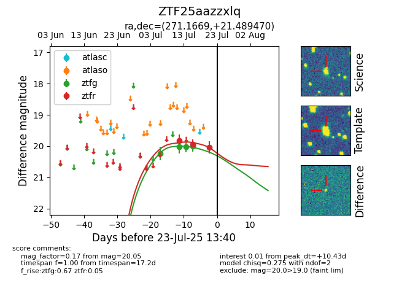

Target ZTF25aazzxlq at 2025-07-23 13:40, see:
FINK: fink-portal.org/ZTF25aazzxlq
Lasair: lasair-ztf.lsst.ac.uk/objects/ZTF25aazzxlq
ALeRCE: alerce.online/object/ZTF25aazzxlq
alt names
ZTF25aazzxlq (ztf,fink)
coordinates:
equatorial (ra, dec) = (271.1669,+21.48947)
galactic (l, b) = (47.6908,+19.56452)
photometry
last ztfg=20.01, ztfr=20.05
4 ztfg, 3 ztfr detections
